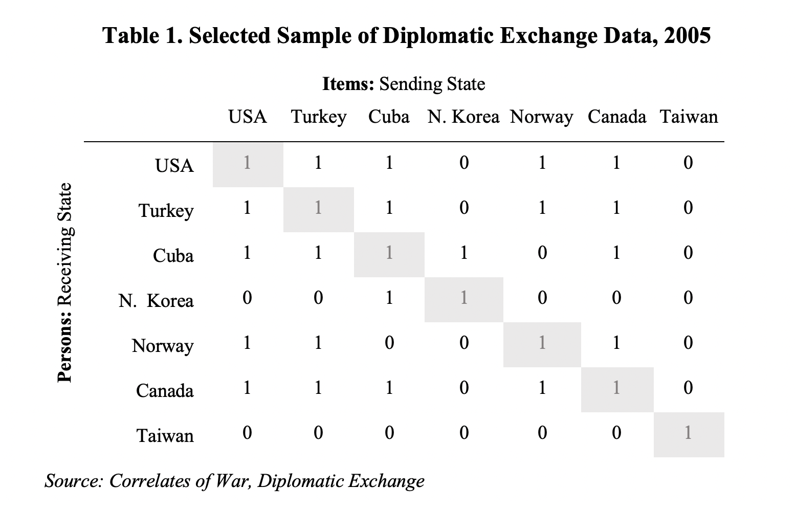

2 On Diplomatic Appeals
The concept of interest in this article is the notion of “diplomatic appeal,” which refers to the latent characteristic of a country that makes other countries willing to invest, institutionalize, and maintain their international partnership in accordance with the established diplomatic norm.4 While it is plausible to measure diplomatic appeal through alternative sources such as how states say about each other in their diplomatic statements, I argue that diplomatic exchange is especially revealing about a country’s diplomatic appeals because they are more costly. Establishing a diplomatic mission to represent the sending state in the receiving state has symbolic significance, but it also takes up significant time and financial resources from the sending country. Staffing it with qualified personnel also requires the investment in professional training in foreign language and bureaucratic capacity (Pant 2008, 55). Due to the constraints of budget and human resources, states need to be selective in where to invest. In this sense, diplomatic exchange is no less “rationally expressive” than other international commitments that have been intensively studied by political scientists in the past, such as signing and ratifying human rights treaties (see Simmons 2009).
In this article, I use the 2005 diplomatic exchange data from the Correlates of War project (Bayer 2006) as an example and present an exploratory measurement of diplomatic appeals with a two-parameter IRT model (2PL). The novelty of this project is the assumption that diplomatic exchange can be seen as the sending state’s recognition of the “diplomatic appeal” of the receiving state. In a psychometric context, each country can be seen both as a “person” whose latent diplomatic appeals are being evaluated and as an “item” that evaluates the diplomatic appeals of other states. In other words, one can conceptualize diplomatic exchange as a special case of peer-evaluation in which each state evaluates each other in terms of their diplomatic appeals. Table 1 demonstrates a sample from the data. Each unshaded cell represents whether a sending state (column name) has any diplomatic exchange with the receiving state (row name). A value of 0 indicates that coders cannot find evidence of any diplomatic exchange whereas 1 indicates that diplomatic exchange to some degree (ambassador, minister, chargé d’affaires, or others). Each of the diagonal element (shaded) represents whether a country has a diplomatic exchange with itself. For both theoretical and methodological reasons, I set all the values as 1.5

Analyzing the diplomatic exchange data with an IRT model yields several analytical benefits that make it more appropriate and powerful compared to alternative approaches. When estimating the diplomatic appeal of receiving state, IRT allows us to take sending-state-heterogeneity into account. If one conceptualizes the diplomatic exchange network as a world in which states judge each other’s appeals, some countries will be “harsher judges” than others. For sending states with limited resources, establishing diplomatic missions abroad can be a difficult decision unless there is a strong motivation to improve the relationship with the receiving state. In addition to the resource, foreign policy preferences can also make a country more or less selective in forming diplomatic ties. In a two-parameter IRT, these differences can be captured by the item difficulty parameter, which is defined by the latent trait level required for a person to have a fifty percent chance of succeeding on an item. Another dimension of sending-state-heterogeneity is the correlation between a sending state’s decision to establish diplomatic exchange and a receiving state’s diplomatic appeals. Among sending states with a high item difficulty (i.e. imposing a higher threshold on a state’s diplomatic appeals to have a fifty percent chance of receiving a diplomatic exchange from it), some of them weigh the receiving state’s diplomatic appeals more importantly than others and are therefore more able to “discriminate” the states they evaluate according to the latent variable of interest. In IRT, this difference across item determines the slope of an Item Characteristic Curve (ICC) and can be modeled as a discrimination parameter in a 2PL model. In the following sections, I will introduce the IRT model used in this research, present a novel ranking of diplomatic appeals estimated by IRT, and discuss the implications of several goodness-of-fit statistics.
The term “diplomatic appeal” is mean to be different and more flexible compared to earlier research that use the same data to measure “status” or “international prestige.”↩
Two reasons lead to this decision. Conceptually, it is possible to think that each country would have a high approval of its diplomatic appeal. While it is possible to set U.S.’s exchange with herself as zero or missing, we might be throwing information away. Methodologically, doing this can also alleviate concerns of “perfect responses.” In some IRT estimation, persons who score 1 or 0 in all the items can be dropped out from the estimation.↩